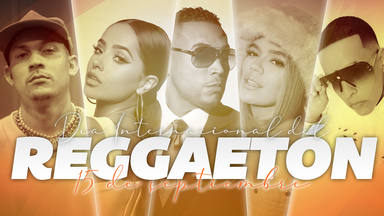

¿QUE ES EL REGGAETON?
El reguetón (anteriormente escrito reggaetón) es un género musical3 que se deriva del reggae en español que es a su vez un subgénero del dancehall, así como elementos principalmente del hip hop y la música latina. Es un género musical muy popular hasta hoy en día; que ha llegado a alcanzar sus apogeos máximos durante las décadas de 2000 y 2010.
Nació en Puerto Rico; surgió a raíz de la popularidad del reggae en español, junto con el hip hop durante los inicios de esa época. Posteriormente, el reguetón se apartó poco a poco del reggae, pero continuó usando los mismos instrumentos y ritmos musicales pero con diferentes letras y melodías. Esto se debió a que se usaban beats de reggae pero con letras y composiciones diferentes.
Similar a la salsa la cual fue una expresión cultural de la juventud hispana de principios de los años 1970, el reguetón llegó a los Estados Unidos en los años 1990 y 2000 y se ha convertido en un modo de expresión para muchos jóvenes hispanos.

CARACTERISTICAS
El reguetón ha cambiado durante el proceso de su ascenso y el de los comienzos dista mucho del actual. Mientras que en un inicio se utilizaban las influencias del reggae y el dancehall, en la actualidad se toman elementos del hip hop. Por ello, los cantantes de este género tienen un estilo en vestimenta muy parecido a los de hip hop y el dancehall; una mezcla de ambos. El disc jockey que está a cargo de las mezclas de música es un individuo de vital importancia en este género.
El sonido del reguetón se caracteriza por un estilo recitativo y un ritmo sincopado producido electrónicamente,3 acompañado por diversas melodías, que le sirven de apoyo, este ritmo tiene una sincronización característica por la cual se guían la mayoría de las canciones. El reguetón, como su antecesor, el reggae en español, tiene ciertas características influido por otros estilos que se escuchan en Jamaica y demás islas caribeñas, basándose en sonidos afro/caribeños como el calipso, la soca y otros ritmos antillanos.
Las letras del reguetón se caracterizan por apoyarse en la rima para lograr que la canción sea pegadiza y de fácil identificación para el público. Este estilo de rima está también inspirado en el rap, aunque también se puede utilizar en el dancehall. Las letras de las canciones se asemejan a las del hip hop. A diferencia del hip hop, la mayoría de cantantes de reguetón recitan sus canciones con estilo de rap y con partes cantadas melódicamente. En sus letras se puede apreciar como los cantantes del género tratan con asiduidad la temática del placer sexual.
.jpg)
MENU